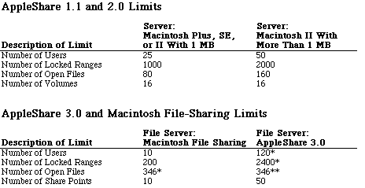

Legacy Document
Important: This document is part of the Legacy section of the ADC Reference Library. This information should not be used for new development.
Current information on this Reference Library topic can be found here:
ADC Home > Reference Library > Technical Notes > Legacy Documents > Networking >
Important: This document is part of the Legacy section of the ADC Reference Library. This information should not be used for new development.
Current information on this Reference Library topic can be found here:
|
IntroductionThe following chart lists some current AppleShare limits that are based upon the chosen server platform and memory configuration. The limits that otherwise might be present on a workstation are still in effect and are not affected by the workstation being logged on to an AppleShare server. These limits will change in the future. 
* The maximum number of users supported by AppleShare version 3.0 can be
adjusted with the AppleShare Admin application or with the
** This is the maximum number of file control blocks (FCBs) allowed by the Macintosh File Manager. The system and any applications running on the server Macintosh (including the file server) will use some of those available FCBs. ReferencesAppleShare File Server Administrator's Guide Macintosh Technical Note #167, AppleShare Foreground Applications Downloadables
|
|